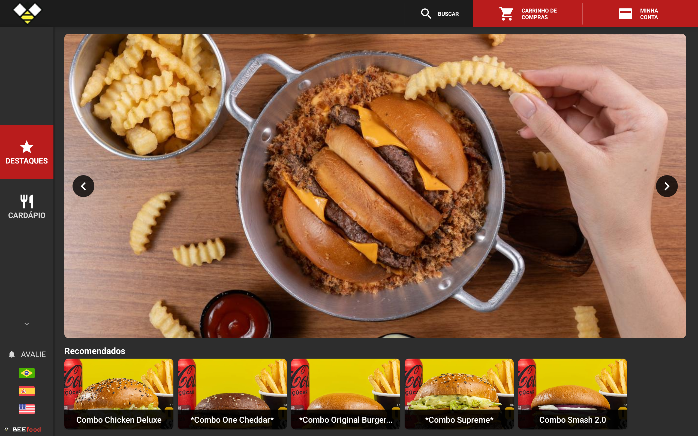

<!-- CTA por convencao, e nao por esperteza: o leitor ja sabe o que fazer com
     "conheca todas as funcionalidades", e a frase promete MAIS do que o
     carrossel mostrou — a pagina tem a plataforma inteira (PDV, mesas e
     comandas, fiscal, estoque, financeiro), que e a unica razao de sair do
     feed. Foi a licao do CTA do totem, que errou duas vezes tentando ser
     interessante.

     O mockup e o mesmo da capa, com a mesma tela: a peca abre e fecha no
     aparelho, e no fim ele ja e conhecido. -->
<div class="slide slide--capa">
  <div class="topo">
    <span class="logo"></span>
    <span class="contador">9 de 9</span>
  </div>

  <div class="pilha g24" style="margin-top: 26px; max-width: 920px">
    <span class="chapeu">Cardápio no Tablet</span>
    <h1 class="titulo titulo--medio">
      Conheça todas as<br><span class="destaque">funcionalidades</span>
    </h1>
    <p class="subtitulo"><b>beefood.com.br/cardapio-digital-tablet</b></p>
  </div>

  <div class="sangria" style="top: 580px; right: auto; left: 50%;
                              transform: translateX(-50%)">
    <div class="tablet" style="width: 920px">
      <div class="tablet__tela">
        
      </div>
      <div class="tablet__suporte"></div>
    </div>
  </div>
</div>
